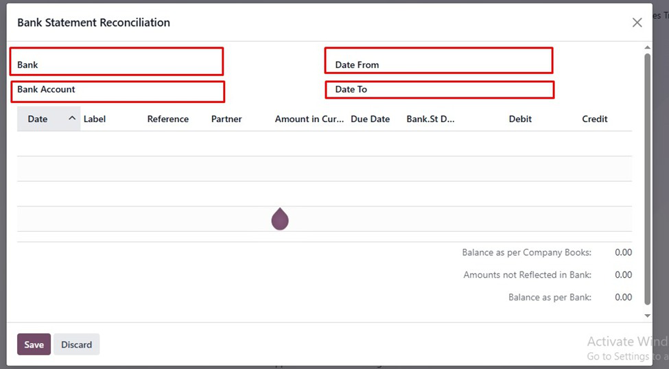
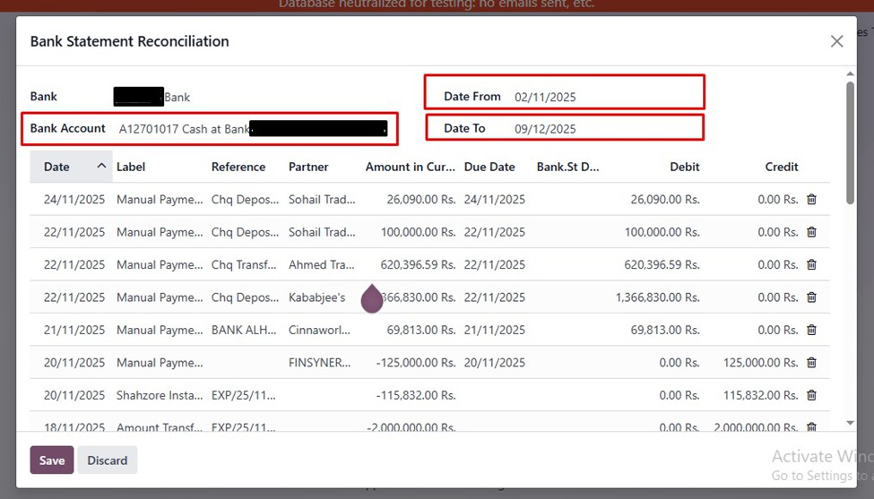
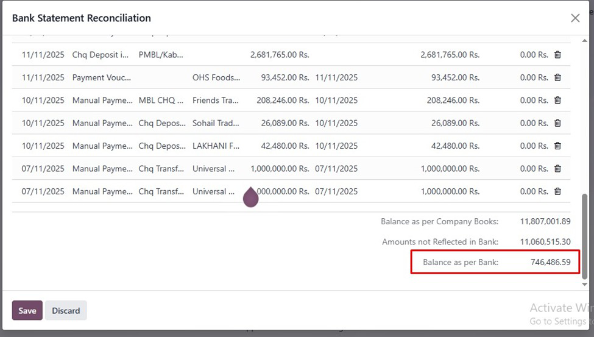
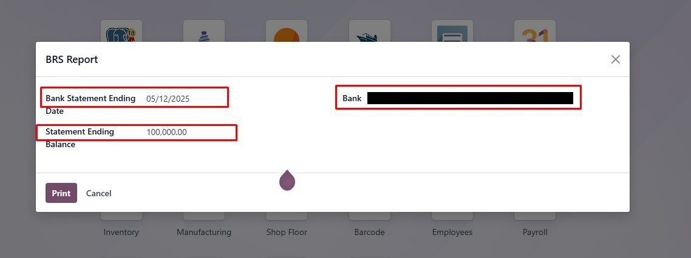

Manual Bank Reconciliation Module
This module replaces the default Odoo bank statement reconciliation with a manual, traditional
approach, allowing users to reconcile statements line by line by entering dates and verifying balances.
1. Overview
The module helps you:
- Enter bank statement dates for each journal line manually.
- Reconcile payments against company books accurately.
- Track differences between bank balance and company ledger.
2. How It Works
- Click "New Statement" to open a manual reconciliation window.
- Enter the statement date for each journal item.
- Save changes to update the reconciliation status and balances.
- Reconciled items will be marked as "Reconciled".
3. Features
- Manual reconciliation of bank statements.
- View current balance as per company books and bank.
- Highlight items not reflected in the bank.
- Easy-to-use wizard for reconciliation.
- Replaces the default Odoo reconciliation method.
4. Notes
- This module works with Odoo 15+.
- Ensure you have access rights for journal entries.
- Internet is not required as this is a manual process.
5. Usage
Follow these steps to perform manual bank reconciliation:

Step 1: Open Manual Reconciliation Wizard.

Step 2: Select Bank, Account and dates.

Step 3: Verify payment lines against company ledger.

Step 4: Check for differences in BRS Report and adjust if needed.
6. Support
For assistance, contact Affinity Business Suite: